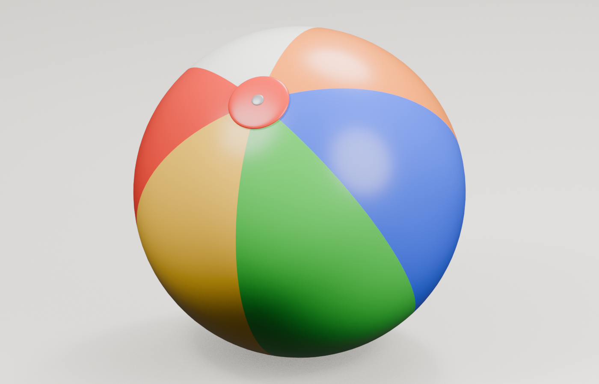
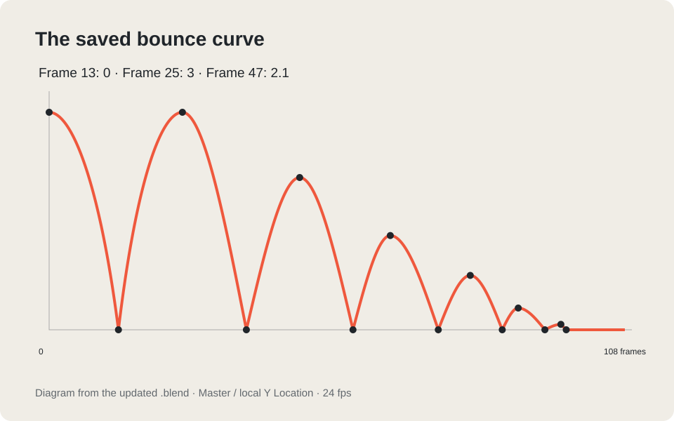

Bring a ball
to life.
Meet the rig. Build a vertical bounce. Add travel and rotation.

What do you remember?
Discuss first. Click a question to reveal the answer.
What does a keyframe store?
A property value at a particular frame. Blender calculates the values between keys using interpolation.
How do Constant, Linear and Bézier differ?
Constant holds a value until the next key. Linear changes it at a constant rate between keys. Bézier uses handles to shape how the value changes.
What is timing? What is spacing?
Timing is how long an action takes. Spacing is the distance between successive poses: larger gaps mean faster movement.
How would you make the same move faster?
Move the ending key closer to the starting key in time while keeping the same start and end values.
Where is a bounce fastest and slowest?
The ball is slowest vertically at the apex and fastest just before impact. Closely spaced poses belong near the top; wider spacing belongs near the floor.
Why can a ball seem to float at impact?
Automatic flat handles can slow it down as it reaches the floor. A sharp change in curve direction gives a more immediate rebound.
Object Mode, Edit Mode or Pose Mode?
Object Mode transforms an object; Edit Mode changes its mesh or rig structure; Pose Mode moves the armature controls for animation.
What makes a surface metallic or rough?
Metallic changes the material response toward a metal. Roughness spreads and blurs reflections. Lighting and the environment determine what there is to reflect.
How do you check that a pose was recorded?
Scrub away and return. Inspect the key in the Timeline or Graph Editor. Turn Auto Key off after using it.
Give each job its own control.
A simple rig separates movement from the mesh. You animate the controls in Pose Mode.
MasterControls the ball’s position.Rotation_BoneControls the ball’s rotation.Stretch_Top_BoneSqueeze or stretch the ball from the top.Stretch_Bottom_BoneSqueeze or stretch the ball from the bottom.Stretch_Middle_BoneAutomatic: follows the top and bottom controls. Do not animate it directly.
Select Armature, enter Pose Mode, then select a control. Blue: Master position. Orange: rotation. Green: top and bottom stretch. The automatic middle bone is hidden; unused channels are locked.
Read the current animation
The vertical file keys Master local Y and Stretch_Top_Bone. The travel file adds Master local X, Rotation_Bone local Z rotation, and bottom stretch. Inspect the existing constraints before changing the rig.
Try it · 5 min
Move the ball without changing its shape.
Reveal a solution
Use Master local X for travel. Rotation_Bone changes orientation; stretch controls change the silhouette. Reset your test changes before continuing.
First, make it bounce in place.
Solve one channel before adding travel: Master local Y Location.
Original Blender render · 24 fps scene · replay returns to the first pose.
Less height. Less time.
Start with one convincing bounce. Then reduce the height and duration of each later bounce.
| Frame | Master local Y | Pose |
|---|---|---|
| 0 | 3 | Release |
| 13 | 0 | Contact |
| 25 | 3 | Apex |
| 37 | 0 | Contact |
| 47 | 2.1 | Lower apex |
| 57 | 0 | Contact |
Continue the settle
Frame/value pairs: 64/1.3, 73/0, 79/0.75, 85/0, 88/0.3, 93/0, 96/0.075, 97/0. Hold at 0 through frame 108. These are teaching values, not a rigid-body simulation.
Refine the bounce in the Graph Editor

Select Master → local Y Location. Keep rounded peaks and sharp floor contacts. Frame 13 uses Free handles; later impacts use Vector handles. Lower each successive peak, then shorten the time between contacts.
Once the timing works, add compression with Stretch_Top_Bone. In the vertical example its local Y is −0.25 at frame 13 and returns to 0 at frame 15. Keep the ball from passing through the floor.
Need a keyframe refresher?
Choose a frame, change Master local Y, then right-click the value → Insert Single Keyframe. Use frames 13 / 25 / 37 with values 0 / 3 / 0 for the first bounce. In the Graph Editor, T changes interpolation; V changes handle type. Auto Key records supported transform changes when enabled—check the keys and turn it off afterward.
Try it · 15 min
Make the second rebound half as high.
Reveal a solution
In the vertical file change the Master local Y key at frame 47 from 2.1 to 1.05. Keep contacts at frames 37 and 57 at zero. Then discuss whether shortening the timing would make the smaller bounce more convincing.
Now let it travel and turn.
Keep the vertical bounce. Layer horizontal motion and rotation on separate controls.
A settling shot, not an endless loop. Watch the colored panels to read the rotation.
Build it in layers.
- Master: animate local X from −4 at frame 0 to +4.1 at frame 99.
- Rotation_Bone: animate local Z rotation so the panels turn in the direction of travel.
- Stretch_Top_Bone: key local Y: −0.4 at frame 13, recovering to +0.4 at frame 15 in the travel example.
Spin can continue in the air. For rolling contact, use distance ÷ radius as a starting angle in radians, then judge the contact visually.
Read the revised stretch controls
This file animates top and bottom control locations rather than directly scaling the mesh. At frame 13 the top local Y is −0.4 and the bottom is 0. At frame 15 they are +0.4 and −0.2. Check the silhouette and floor contact as you adjust them.
Try it · 20 min
Remove spin without changing the path.
Reveal a solution
In a duplicate travel action, mute Rotation_Bone local Z rotation in the Graph Editor. Master still moves the ball. Restore the curve and compare how the colored panels reveal the spin.
Open. Inspect. Make it yours.
Three original Blender scenes, each at a clear stage. Updated rig and animations · rendered in Blender 5.3.
Download all three teaching files ↓
Build a dynamic machine.
Follow Path, constraints, shape keys and modifiers—then plan your own challenge entry.
Continue to Part 2 ↗